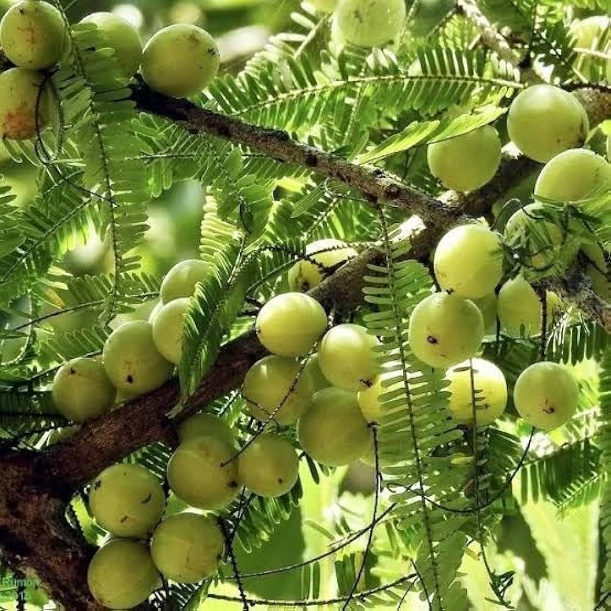

Amla (Indian Gooseberry)
Botanical Name: Phyllanthus emblica
Family: Phyllanthaceae
Native Region: India and Southeast Asia
Significance: High Vitamin C, boosts immunity and digestion in Ayurveda.
Uses: Pickles, juices, health tonics.
BREIF ☰
×
The Amla tree, scientifically known as Phyllanthus emblica, is a revered species native to the Indian subcontinent and parts of Southeast Asia. Also known as
Indian gooseberry, Amla holds a prominent place in traditional medicine, culinary traditions.
In Ayurveda, the traditional Indian system of medicine, Amla is revered for its medicinal properties and therapeutic benefits. It is used to treat a wide
range of ailments, including digestive disorders, respiratory infections, and skin conditions. Amla is also believed to have rejuvenating properties, promoting longevity
and vitality.
The Amla tree plays a vital role in its native ecosystems, providing habitat and food for a variety of wildlife species. Birds, bats, and small mammals are
attracted to the tree's fruits, contributing to seed dispersal and regeneration. Moreover, Amla trees help improve soil fertility and prevent erosion, making them valuable
for ecosystem stability.